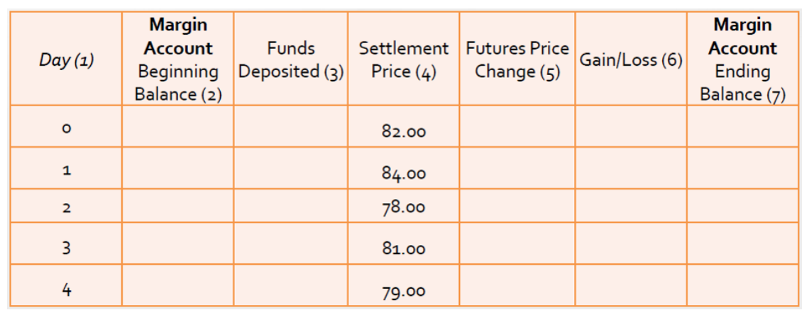

Build daily margin accounts and reconcile trading result
Useful first: Convert futures quotations into payoff and conditional loss bounds
Lesson outline
- 02IntroductionSee the main question, learning objectives and prerequisites.
- 03Key definitions and conceptsGet familiar with the important terms and notation.
- 04The three margin conceptsInitial margin, the stated quantities, is the required deposit when opening a position.
- 05Daily profit and loss, with unitsLet the stated quantities be the opening futures price, the stated quantities the settlement price at the end of day t, the stated quantities the number of contracts and the stated…
- 06From daily result to an account balanceLet the stated quantities be the previous ending account balance.
- 07Problem 4: a daily margin tableThere are 20 long contracts quoted directly in dollars per contract, with prices 82, 84, 78, 81 and 79.
- 08Connect the reasoningExplore connect the reasoning.
- 09Worked exampleFollow a complete application of the reasoning.
- 10Practise the reasoningWork through written tasks, with optional support and solutions.
- 11Check your reasoning: an offline quizCheck your choices and see feedback without a connection.
- 12Check your understandingReview the key distinctions and check what you can explain.
- 13Test yourself laterTry another prepared question before rereading.
- 14SourcesFind the materials and limits behind the lesson.
Introduction
In this lesson, build daily margin accounts and reconcile trading result.
2.1 What you’ll learn
- For a fixed position, produce daily settlement \(\mathrm{P/L}\), pre-call balance, call/top-up and ending account balance, then reconcile final balance to deposits/withdrawals and endpoint \(\mathrm{P/L}\). State the strict-below threshold, chosen restoration target and withdrawal policy before computing.
- Distinguish both source uses of variation margin. No settlement-flow interest is modeled.
2.2 Before you begin
Check the foundations
Two longs, \(10\) units/contract, price \(5\to 4\) dollars/unit.
Reveal foundation explanation
\(20(4-5)=-\$20\), short +$20.
An account has $100 deposited and loses $30. Is its $70 balance a $70 profit?
Reveal foundation explanation
no, \(\mathrm{P/L}=-30\); \(\text{balance}=\text{deposit}+\mathrm{P/L}\).
Key definitions and concepts
- Initial margin: Cash posted to support an open position.
- Maintenance margin: The minimum balance used to test whether a call is triggered.
- Restoration target: The explicitly specified balance to which a breached account is topped up.
The three margin concepts
Initial margin, \(I\), is the required deposit when opening a position. Both the long and short must post it.
The lecture says it is the trader's money in the margin account, not the price paid for the underlying asset. Because it is only a fraction of the underlying contract value, it creates leverage: a given movement in the full contract's price can be large relative to this initial deposit.
The seminar gives 5–15% as a usual illustrative range rather than a universal required rate.
Maintenance margin, \(M\), is the minimum allowed account balance. Daily losses may reduce the balance below \(M\). A margin call is then a notice to restore the balance to the specified target. The lecture allows a target of maintenance or initial margin; the handout describes restoring maintenance; the seminar's formula uses initial margin. The target must therefore be stated when doing calculations.
The lecture and handout call the extra deposited funds variation margin. The seminar also uses that phrase for the daily transfer of settlement gains/losses and writes “\(\text{Variation Margin}=\text{Initial Margin}-\text{Margin balance}\).” That expression describes a top-up to initial margin when the balance is deficient;
it is not a formula saying every daily settlement payment equals \(I\) minus the balance. These meanings share the aim of limiting unpaid losses, but use different cash-account conventions.
Below, “daily gain/loss” means the price-based transfer and “top-up” means the additional deposit after a call.
The seminar describes maintenance both as a minimum balance and as a payment made after adverse movement. The minimum is the threshold; the required payment is the amount needed to restore the chosen target. Keeping these quantities separate prevents confusing a $2,000 threshold with a $2,000 deposit in every case.
Daily profit and loss, with units
Let \(F_0\) be the opening futures price, \(F_t\) the settlement price at the end of day t, \(N\) the number of contracts and \(q\) the multiplier converting one quoted price unit into money per contract. With a constant position size and multiplier,
A price rise credits the long and debits the short; a fall reverses these transfers. The lecture writes the price difference for a normalized unit; \(Nq\) restores the contract units used by the seminar's tick examples. For a commodity quoted in dollars per pound, \(q\) is pounds per contract. For a contract quoted directly in dollars per contract, \(q=1\).
Adding the daily transfers cancels every intermediate price:
The short obtains the opposite amount. This telescoping sum explains why the total trading result equals the closing minus opening price, even though it is paid in installments. The account can require cash along the way even when the final cumulative result is favorable. The source's reasoning ignores interest earned or paid on the timing of settlement cash flows.
From daily result to an account balance
Let \(A_{t-1}\) be the previous ending account balance. Before any top-up or withdrawal, the new balance is
If a call restores a target \(R\), the deposit is \(C_t=R-A_t^-\) when \(A_t^-<M\); otherwise there is no call. With a withdrawal \(W_t\), the ending balance becomes
These equations are an explicit accounting synthesis of the source descriptions. A deposit increases the balance but does not create trading profit; a withdrawal decreases the balance but does not create trading loss. If a trader fails to meet a call, the exchange/clearing house can close the position through a reverse trade at that trader's cost.
6.1 The handout's five-day example

The complete source table has an opening price of 1,000 and both initial and maintenance margin equal to 200. Closing prices are 1,100, 1,200, 1,050, 950 and 900. The source uses a one-unit price-to-money normalization.
The long receives 100 on each of the first two days, then loses 150, 100 and 50. Its cumulative gain/loss is therefore 100, 200, 50, −50 and −100.
On day 4 the balance falls from 250 to 150 and a deposit of 50 restores it to 200. On day 5 the balance again needs 50.
The long ends with 200 in the account after depositing 100 beyond its initial 200, but its trading result is −100. The account balance is not its profit.
The short loses 100 on each of the first two days and posts 100 each time to restore 200. It then gains 150, 100 and 50, ending with 500. Total deposits were 400, so the account's net surplus over deposits is 100, equal to its trading gain. This compares the two positions' opposite cash transfers and illustrates why small initial deposits can require substantial later funding.
Problem 4: a daily margin table
There are 20 long contracts quoted directly in dollars per contract, with prices 82, 84, 78, 81 and 79. Total initial margin is \(20\times5=100\) and total maintenance is \(20\times2=40\). The original blank table is retained because its settlement-price column is visual content absent from native text extraction.

Source table: day 0 is the opening at 82; days 1–4 settle at 84, 78, 81 and 79. The table requests opening balance, deposits, price change, gain/loss and ending balance.
The completed explanation assumes no voluntary withdrawals and tops up to initial margin immediately after a below-maintenance settlement. The “deposit” column below follows that order, rather than assuming funds arrive before that day's price movement:
| Day | Beginning balance ($) | Settlement ($/contract) | Price change ($/contract) | Daily gain/loss ($) | Deposit after settlement ($) | Ending balance ($) |
|---|---|---|---|---|---|---|
| 0 | 0 | 82 | — | — | 100 initial | 100 |
| 1 | 100 | 84 | +2 | +40 | 0 | 140 |
| 2 | 140 | 78 | −6 | −120 | 80 | 100 |
| 3 | 100 | 81 | +3 | +60 | 0 | 160 |
| 4 | 160 | 79 | −2 | −40 | 0 | 120 |
Day 2 has an unadjusted balance of \(140-120=20\), below maintenance 40. Restoring initial 100 requires 80. The ending balance 120 is not a profit of 20: deposits were 180, so the trading loss is 60, matching \(20(79-82)=-60\). If the call instead restores maintenance, the day-2 deposit is 20 and later balances are 40, 100 and 60, still leaving the same −60 trading result relative to total deposits of 120.
Connect the reasoning
- Use adjacent settlement prices to compute \(G_{\mathrm{long}}=Nq(F_t-F_{\mathrm{previous}})\), \(G_{\mathrm{short}}\) opposite. Both \(N\) and \(q\) must remain fixed; changing positions belongs to O005.
- Add \(G\) to previous ending account before funding. Compare this \(A^{-}\) with \(M\).
- Only after a breach compute \(R-A^{-}\). Initial and maintenance restoration produce different balances and deposits but identical trading result. Do not silently choose a target when none is given.
- Withdraw only under stated retained-balance policy. A deposit is cash funding; a withdrawal is cash removal; neither is a trade gain/loss.
- Sum \(G\): middle prices cancel, giving \(Nq(F_{\mathrm{final}}-F_{\mathrm{open}})\) for a long. Reconcile \(\mathrm{P/L}=A_{\mathrm{final}}+\text{total withdrawals}-\text{total deposits}\) (including initial).
- A missed call can trigger forced reverse trade at trader cost. Funding along the path remains necessary even when final \(\mathrm{P/L}\) is favorable. This is why a final payoff calculation alone is not a liquidity plan.
Worked example
Source seminar table: \(20\) long dollar-per-contract quotes, \(q=1\), open \(82\), then \(84\),\(78\),\(81\),\(79\). \(I=100\), \(M=40\), \(R=100\), no withdrawals. \(G=(+40,-120,+60,-40)\). Pre-call balances \(=(140,20,160,120)\).
Only day \(2\) breaches; deposit \(80\);
endings \(=(140,100,160,120)\). \(\text{Total deposits}=180\); \(\mathrm{P/L}=120-180=-60=20(79-82)\). If \(R=40\), deposit on day \(2\) is \(20\), endings \(=(140,40,100,60)\);
total deposits \(120\); \(\mathrm{P/L}\) still \(-60\). The source image is useful only after the attempt;
it supplies no independent response evidence. The handout's normalized \(1000\to 1100\to 1200\to 1050\to 950\to 900\) with \(I=M=200\) has long \(G\) \(+100\),\(+100\),\(-150\),\(-100\),\(-50\);
final \(A\) \(200\) after \(100\) top-ups, \(\mathrm{P/L}\) \(-100\). Opposite short posts \(100\) each on first two days then ends \(500\) after \(400\) deposits, \(\mathrm{P/L}\) \(+100\).
Practise the reasoning
Write your reasoning before revealing an explanation. Begin with support, then apply the ideas to another situation.
10.1 Written exercise 1
Hypothetical one long \(q=10\), open \(10\), settlements \(11\) then \(7\). \(I=50\), \(M=30\), \(R=50\), no withdrawals.
Solve the following:
- Complete daily \(G\), \(A^{-}\), \(C\), \(A\) and final \(\mathrm{P/L}\), and explain whether the call is trading loss.
Show a hint
Pause before calculating or choosing an explanation:
- What quantities, actors or outcomes are being compared? Write their roles, units and dates beside them.
- Which condition decides whether the relationship applies? Check the relevant definition before using a formula or classifying the case.
- What would have to remain fixed for your comparison to be meaningful? Work through one link in the reasoning at a time.
- How could you check the direction, boundary case or alternative explanation before stating your conclusion?
A local draft for your own study.
Reveal explanation
Key: Day1 \(G=+10\), \(A^{-}=60\), \(C=0\), \(A=60\); day \(2\) \(G=-40\), \(A^{-}=20<30\), \(C=30\), \(A=50\). \(\text{Deposits}=80\), \(\mathrm{P/L}=50-80=-30=10(7-10)\). \(C\) funds account, not extra trading loss; \(G\) captures loss. Full supported components required.
Allowed help: reveal the named definitions, then at most two prepared hints in Misconceptions and correction.
10.2 Written exercise 2
Hypothetical two long contracts, \(q=10\) units each, open $50/unit and settle \(51\),\(48\),\(49\).
Solve the following:
- Total \(I=100\), \(M=70\), \(R=100\);
- no withdrawals.
- For every day give \(G\),\(A^{-}\),\(C\),\(A\), then final \(\mathrm{P/L}\) by daily sum and account reconciliation.
- Explain variation-margin ambiguity, why equality with \(M\) is different from below \(M\), and what changes if the target were maintenance.
A local draft for your own study.
Reveal explanation
Explanation: Exposure is \(20\). Day 1: \(G=+20\), \(A^{-}=120\), \(C=0\), \(A=120\);
day 2: \(G=-60\), \(A^{-}=60<70\), \(C=40\), \(A=100\); day 3: \(G=+20\), \(A^{-}=120\), \(C=0\), \(A=120\).
Trading \(\mathrm{P/L}\) is \(-20=20(49-50)=120-(100+40)\). With \(R=70\) instead, day 2 has \(C=10\), \(A=70\), and day 3 ends with \(A=90\);
trading \(\mathrm{P/L}\) remains \(-20\) against deposits of \(110\). Equal70 no call under strict-below;
below triggers. Variation margin may mean \(G\) transfer or \(C\) top-up;
distinguish them. Deposits do not create \(\mathrm{P/L}\).
All three components required.
10.3 Written exercise 3
Hypothetical three short dollar-per-contract futures, \(q=1\), open \(100\) then settle \(102\),\(98,103\).
Solve the following:
- Total \(I=30\),\(M=20\),\(R=30\);
- no withdrawals.
- Give each daily \(G\),\(A^{-}\),\(C\),\(A\) and final cumulative \(\mathrm{P/L}\) by both endpoint and account.
- Explain initial/maintenance/variation quantities, the strict threshold and the effect of restoring maintenance instead.
A local draft for your own study.
Reveal explanation
Explanation: Day 1: \(G=3(100-102)=-6\), \(A^{-}=24\), \(C=0\), \(A=24\); day 2: \(G=+12\), \(A^{-}=36\), \(C=0\), \(A=36\);
day 3: \(G=-15\), \(A^{-}=21\), \(C=0\), \(A=21\). Trading \(\mathrm{P/L}\) is \(-9=3(100-103)=21-30\).
No breach (\(21>20\)), hence maintenance target changes nothing on this path. \(I\) deposit30, \(M\) threshold20, \(G\) daily transfer and \(C\) replenishment distinct even when both called variation margin. Equality20 would not call;
below would. Balance21 is not profit21.
All three components required.
Check your reasoning: an offline quiz
Choose one answer per question. Check individual answers or check the whole quiz. Each option includes feedback on the reasoning, and everything works offline.
Reveal explanation
A breach triggers restoration to the target: \(100-20=80\).
Reveal explanation
Equality is not a strict breach; account balance and trading result remain separate.
Reveal explanation
Reconcile final balance plus withdrawals minus all deposits: \(120-180=-60\).
Check your understanding
Avoid these mistakes: computing cumulative change anew every day; calling at equality; using \(M\) as the deposit; calling final balance profit. Correction: adjacent-price transfer first, then pre-call balance, threshold, chosen target.
- For a fixed position, produce daily settlement \(\mathrm{P/L}\), pre-call balance, call/top-up and ending account balance, then reconcile final balance to deposits/withdrawals and endpoint \(\mathrm{P/L}\). State the strict-below threshold, chosen restoration target and withdrawal policy before computing.
- Distinguish both source uses of variation margin. No settlement-flow interest is modeled.
Test yourself later
Return to these questions after a break, before rereading the explanation. Use a question you have not just viewed.
13.1 Review question 1
Hypothetical one long \(q=25\), open \(20\) then settle \(18\),\(19\),\(17\). \(I=100\),\(M=60\),\(R=100\);
Solve the following:
- no withdrawals.
- Fill \(G\),\(A^{-}\),\(C\),\(A\);
- reconcile endpoint/daily/account \(\mathrm{P/L}\).
- Explain deposit versus daily transfer, strict equality threshold, and recompute account/funding if \(R=60\).
A local draft for your own study.
Reveal explanation
Explanation: Daily \(G\) values are \(-50,+25,-50\). With \(R=100\): day 1 has \(A^{-}=50<60\), \(C=50\), \(A=100\);
day 2 has \(A^{-}=125\), \(C=0\), \(A=125\); day 3 has \(A^{-}=75\), \(C=0\), \(A=75\).
Trading \(\mathrm{P/L}\) is \(-75=25(17-20)=75-150\). With \(R=60\): day 1 has \(C=10\), \(A=60\);
day 2 ends with \(A=85\); day 3 has \(A^{-}=35\), \(C=25\), \(A=60\).
Total deposits are \(135\), and trading \(\mathrm{P/L}\) is \(60-135=-75\). Equality60 no breach.
Daily settlement \(G\) and top-up \(C\) separate; funding target changes path, not price \(\mathrm{P/L}\).
All three components required.
13.2 Review question 2
Hypothetical two shorts, \(q=5\) each, open \(30\) then settle \(32\),\(35\),\(31\). \(I=80\),\(M=40\),\(R=80\);
Solve the following:
- no withdrawals.
- Produce \(G\),\(A^{-}\),\(C\),\(A\) and endpoint/daily/account \(\mathrm{P/L}\).
- Identify the strict call threshold, explain both variation-margin uses, and recompute balances/deposits for \(R=40\).
A local draft for your own study.
Reveal explanation
Explanation: Exposure is \(10\), and daily \(G\) values are \(-20,-30,+40\). With \(R=80\): day 1 has \(A^{-}=60\), \(C=0\), \(A=60\);
day 2 has \(A^{-}=30<40\), \(C=50\), \(A=80\); day 3 has \(A^{-}=120\), \(C=0\), \(A=120\).
Trading \(\mathrm{P/L}\) is \(-10=10(30-31)=120-130\). With \(R=40\): day 2 has \(C=10\), \(A=40\), and day 3 ends with \(A=80\);
total deposits are \(90\), and trading \(\mathrm{P/L}\) is \(-10\). At exactly40 no call;
below triggers. \(G\) is price-based settlement; \(C\) top-up; final balances include funding and are not profits.
All three components required.
Sources
Show materials and lesson scope
- L10(EssentialsOfFuturesTrading).pptx, slide 5
- FI01(Futures Contracts).doc, Ch. I, LibreOffice-rendered p. 4
- 02_seminar.pdf, PDF p. 11
- 02_seminar.pdf, PDF p. 13
- L10(EssentialsOfFuturesTrading).pptx, slide 5–6
- 02_seminar.pdf, PDF p. 12–13
- L10(EssentialsOfFuturesTrading).pptx, slide 6
- FI01(Futures Contracts).doc, Ch. I, LibreOffice-rendered p. 4–5
- 02_seminar.pdf, PDF p. 5, 12
- FI01(Futures Contracts).doc, Ch. I, LibreOffice-rendered p. 7
- FI01(Futures Contracts).doc, Ch. I, LibreOffice-rendered p. 9
- 02_seminar.pdf, PDF p. 20
Numerical and contextual illustrations are hypothetical unless explicitly described as a reported result. Historical data, model assumptions and unresolved source differences retain their stated limits.
These exercises are for self-study. Viewing a prepared item or solution may make that item unsuitable as a fresh check in a tutor chat. This page does not record an assessed learning result.